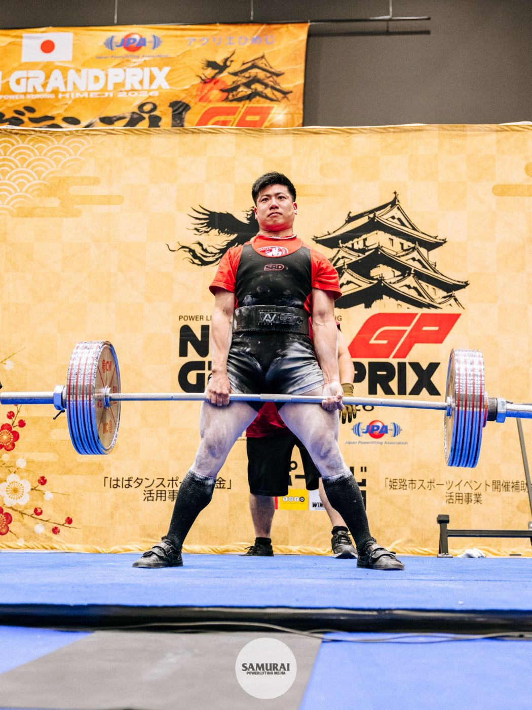

1
正しい振り返りの方法がわかる
成功や失敗を感情だけで判断せず、できたこと・改善点を整理する方法を学びます。今年の取り組みを振り返り、自分の成長と課題を明確にしましょう。
勝ち筋をつくるトレーニング講座 第6回・最終回
今年の努力を、来年の結果につなげる60分。
モチベーションでトレーニングの質を落とさない方法・コツを習得します。
2026.12.20 （日）10:30〜11:30
会場：ノーリミッツ岡山／オンラインアーカイブ配信あり
メンバー 3,300円／一般 5,500円 参加特典：振り返り＆目標設定ワークシート

Photo: SAMURAI POWERLIFTING MEDIA
For
そんな方にこそ、知ってほしいことがあります。
振り返りは、できなかったことを反省するためだけのものではありません。
今年できたこと、うまくいかなかったこと、その理由を整理し、次の行動につなげるためのものです。
そして、目標設定も同じです。
「来年こそ自己ベストを更新したい！」
そう思うだけでなく、そのために何をするのかまで決める。
それが、目標達成への第一歩になります。
Why
1年間、たくさんの時間をトレーニングに費やしてきたと思います。
自己ベストを更新できた人。
思いどおりの結果が出なかった人。
新しいことに挑戦した人。
それぞれに、積み重ねてきた経験があるはずです。
でも、その経験を次の成長につなげられているでしょうか？
「良かった」「悪かった」——そんな感想だけで終わらせてしまうのは、もったいない。
大切なのは、結果を評価することだけではなく、結果につながった行動を振り返ること。
そして、振り返りから見えてきた課題を、来年の目標と日々のトレーニングに結びつけることです。
目標と行動が明確になれば、その日のモチベーションだけに頼らず、目的を持って練習に取り組みやすくなります。
Outcome
成功や失敗を感情だけで判断せず、できたこと・改善点を整理する方法を学びます。今年の取り組みを振り返り、自分の成長と課題を明確にしましょう。
「強くなりたい」「結果を出したい」という思いを、具体的な目標に落とし込みます。目指す結果と現在地を整理し、次に何が必要なのかを考えます。
目標を立てて終わりにはしません。目標達成に向けて、次の練習から何に取り組むのかまで具体的に決めていきます。
セミナーを終えたとき、来年の目標と、そのための最初の一歩が明確になっていることを目指します。

Photo: SAMURAI POWERLIFTING MEDIA
Series
これまでの講座では、ベンチプレス、スクワット、デッドリフト、ピーキング、試合設計など、目標達成につながるトレーニングについて学んできました。
そして、第6回はその締めくくり。
学んだこと、実践したことを振り返り、次の目標達成につなげる時間です。
もちろん、これまでの講座に参加していない方も大歓迎。競技種目や経験年数に関係なく、自分自身の1年を振り返り、来年の目標を立てるためにご参加いただけます。
Contents
STEP 1
今年の目標、取り組み、結果を整理し、自分の成長と課題を見つけます。
STEP 2
振り返りをもとに、来年達成したい目標を具体的にします。
STEP 3
目標に向けて、日々のトレーニングで何をするのかを決めます。
参加特典
学んだ内容を実践しながら、今年の振り返りから来年の目標、次の行動までを整理できます。
Instructor
佐藤亮太
ノーリミッツ岡山
トレーニングの結果を次の成長につなげるために必要な、振り返りと目標設定の考え方をお伝えします。
Details
お申し込み・ご質問は、受付スタッフまたは佐藤オーナーまでお気軽にどうぞ。
Archive
今年おこなった全6回を、アーカイブでご覧いただけます。見逃した回も、もう一度観たい回も。ベンチプレス、スクワット、デッドリフト、ピーキング、試合設計、そして今回の振り返りまで。
メンバー
19,800円／アーカイブ配信
一般
29,800円／アーカイブ配信
12月20日の第6回が、1年間の集大成です。
お申し込み・ご相談は、受付スタッフまたは佐藤オーナーまで。
FAQ
Message
今年の経験を振り返り、自分の成長と課題を知る。
来年の目標を決め、そのために必要な行動を明確にする。
2027年を、目標に向かって
迷わず進める1年に。
12月20日、一緒に今年を振り返り、来年の勝ち筋をつくりましょう。
▶ セミナーに申し込む勝ち筋をつくるトレーニング講座 第6回・最終回／2026年12月20日（日）10:30〜11:30